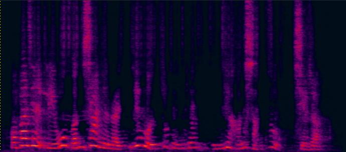
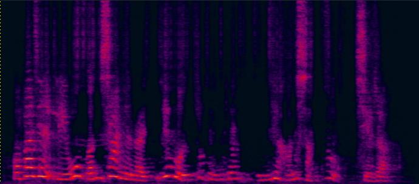
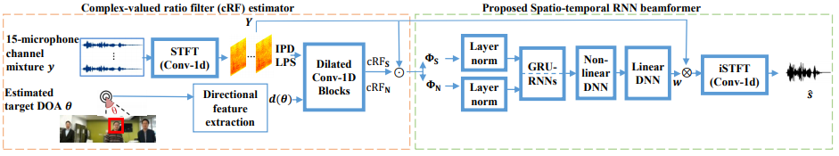
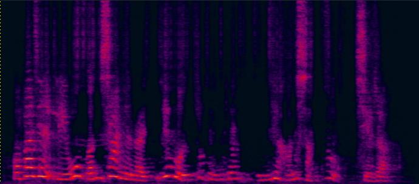

 
submitted to Interspeech2020, Yong XU (yong.xu.ustc@gmail.com), Meng Yu, Shixiong Zhang, Lianwu Chen, Chao Weng, Jianming Liu, Dong Yu, Tencent AI lab, Bellevue, WA, USA

Purely NN based speech separation and enhancement methods, although can achieve good objective scores, inevitably cause nonlinear speech distortions that are harmful for ASR [5]. On the other hand, the MVDR beamformer with NN-predicted masks, although can significantly reduce speech distortions, has limited noise reduction capability. But our proposed CM-based multi-tap MVDR could achieve non-distortion and lower residual noise. For the commercial general-purpose ASR engine, non-distortion is more important than no residual noise, considering that the acoustic model is already robust enough to the mild-level noise (but NOT robust to the non-linear distortion introduced by NN).
Demo 1 (waveforms aligned with the spectrograms shown in Fig. 2 of the paper): [Sorry for that the demos below are all in Mandarin]:

| Mix (2-SPK overlapped + non-stationary additive noise) wav | ReLU mask w/o MVDR (baseline) (has non-linear distortion, lost some details on the high freqency) wav | Prop. Complex mask (CM) w/o MVDR (although better but still has non-linear distortion, also lost some details on the high freqency) wav | Complex mask MVDR Joint Train (distortionless is firstly guaranteed, but with some residual noise) wav |


Prop. CM Multi-tap MVDR Joint trained (distortionless is firstly guaranteed, also less residual noise) wav |
Reverb Clean (Reference clean) wav |
Demo2: Simulated 2-speaker mixture for target speech separation


| 2-speaker mixture wav | enhanced by dilated CNN with ReLU mask (baseline) (has non-linear distortion, lost some details on the high freqency) wav | enhanced by jointly trained dilated CNN with prop. multi-tap MVDR (distortionless is firstly guaranteed, also less residual noise) wav | Reverb Clean (reference clean) wav |
Demo 3: Simulated 3-speaker mixture for target speech separation


| 3-speaker mixture wav | enhanced by dilated CNN with ReLU mask (baseline) (has non-linear distortion, lost some details on the high freqency) wav | enhanced by jointly trained dilated CNN with prop. multi-tap MVDR (distortionless is firstly guaranteed, also less residual noise) wav | Reverb Clean (reference clean) wav |
Demo 4: Real-world far-field recording and testing:

15-element non-uniform linear microphone array and colocated 180 degree wide-angle camera for our real-world video and audio recording
For the real-world videos, as the 180-degree wide-angle camera is colocated with the linear mic array, the rough DOA of the target speaker could be estimated according to the location of the target speaker in the whole camera view [1]. Face detection and face tracking are conducted to track the target speaker's DOA and lip movement. (Note that in our simulation data, there is no need to do face tracking, because the video of each overlapped speaker is already in single-face mode after the data cleaning and filtering process.)
| Real-world far-field two-speaker mixture recorded by the hardware (camera and microphone array ) above | Real-world separated male speaker's speech by the proposed multi-tap MVDR method (face detected and tracked in the red rectangle) |
Demo 5: Real-world far-field recording and testing 2:
| Real-world far-field two-speaker mixture recorded by the hardware (camera and microphone array ) above | Real-world separated female speaker's speech by the proposed multi-tap MVDR method (face detected and tracked in the red rectangle). |
Reference:
[1] Audio-Visual Speech Separation and Dereverberation with a Two-Stage Multimodal Network, Ke Tan, Yong XU, Shixiong Zhang, Meng Yu, Dong Yu, accepted to IEEE Journal of Selcted Topics in Signal Processing, 2020
[2] Multi-modal Multi-channel Target Speech Separation, Rongzhi Gu, Shi-Xiong Zhang, Yong Xu, Lianwu Chen, Yuexian Zou, Dong Yu, accepted to IEEE Journal of Selcted Topics in Signal Processing, 2020
[3] Time Domain Audio Visual Speech Separation, Jian Wu, Yong Xu, Shi-Xiong Zhang, Lian-Wu Chen, Meng Yu, Lei Xie, Dong Yu, ASRU2019
[4] A comprehensive study of speech separation: spectrogram vs waveform separation Fahimeh Bahmaninezhad, Jian Wu, Rongzhi Gu, Shi-Xiong Zhang, Yong Xu, Meng Yu, Dong Yu, Interspeech2019
[5] Du, Jun, Qing Wang, Tian Gao, Yong Xu, Li-Rong Dai, and Chin-Hui Lee. "Robust speech recognition with speech enhanced deep neural networks.". Interspeech2014
[6] Xu, Yong, Jun Du, Li-Rong Dai, and Chin-Hui Lee. "A regression approach to speech enhancement based on deep neural networks." IEEE/ACM Transactions on Audio, Speech, and Language Processing 23, no. 1 (2014): 7-19.
[7] Luo, Yi, and Nima Mesgarani. "Conv-tasnet: Surpassing ideal time–frequency magnitude masking for speech separation." IEEE/ACM transactions on audio, speech, and language processing 27.8 (2019): 1256-1266.
[8] Heymann, Jahn, Lukas Drude, and Reinhold Haeb-Umbach. "Neural network based spectral mask estimation for acoustic beamforming." 2016 IEEE International Conference on Acoustics, Speech and Signal Processing (ICASSP). IEEE, 2016.
[9] Benesty, Jacob, Jingdong Chen, and Emanuël AP Habets. Speech enhancement in the STFT domain. Springer Science & Business Media, 2011.